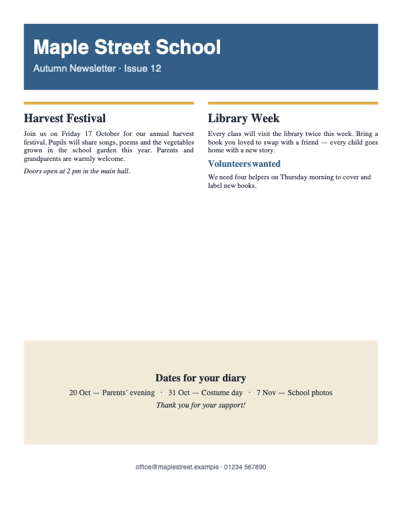

Open old Publisher (.pub) files without Microsoft Publisher
Convert your .pub files to PDF directly in your browser.
- Your files stay on your device — nothing is uploaded.
- Free for one file at a time. No account, no watermark.
- Whole folders: €9 once — every file converted into one ZIP.
Why now?
Microsoft removed Publisher from Microsoft 365 on October 1, 2026; support for the last boxed version ends on October 13, 2026. Subscribers can no longer open their .pub files — and Chromebooks and Macs never could. Years of newsletters, bulletins, flyers and brochures need a new home.
How it works
- Drop a .pub file (or a whole folder with the Batch Pass).
- Wait a second — the file is read and laid out as a PDF inside your browser.
- Download the PDF. Print it, share it, or import it into Word or Canva to edit.

What is converted
- Publisher versions: files from Publisher 98 and 2000, and from Publisher 2002 to 2021 / Microsoft 365 (all use the same file format since 2002). Publisher 97 and older have not been tested.
- Kept: text, sizes, bold/italic/underline, alignment, tables, shapes, colours, pictures (PNG, JPEG, BMP, GIF and Windows clip art/border art), several pages.
- Approximated: fonts are replaced by standard fonts of the same size and style; some advanced drawings (EMF+) and rotated items may not appear.
- Tested on real files: 14 of 15 real-world publications collected from a public bug tracker opened correctly. Files that cannot be read show a clear message — and Batch Pass buyers get a refund.
- Works on: Chrome, Edge, Firefox and Safari on Chromebook, Windows, Mac and Linux. Installable on Chromebook and Windows, where it appears in "Open with" for .pub files. Works offline once loaded.
Pricing
Free
€0
- One file at a time, as often as you like
- Full-quality PDF
- No watermark, no account
Batch Pass
€9 one-time
- Whole folders in one go
- One ZIP, sub-folders kept
- Lifetime, no subscription
- 30-day refund, no questions
Questions
Are my files uploaded anywhere?
No. Your Publisher files never leave your device: the conversion runs inside your browser. Safe for school, parish, club, council and business documents.
Can I try before paying?
Yes — convert as many single files as you want for free. The Batch Pass only saves you from doing them one by one.
A file failed — what now?
Some damaged or unusual files cannot be read yet. If you bought the Batch Pass and it does not work for your files, you get a full refund.
Can I edit the result?
The PDF keeps your layout for reading, printing and archiving. To edit, open the PDF in Word, or import it into Canva or Google Docs.
Does it work on a Chromebook?
Yes. In Chrome, click the install icon in the address bar: PubRescue then appears in "Open with" for .pub files in the Files app.
I lost my activation code
Write to support with the e-mail used for payment and we send it again.
Refund policy
Full refund within 30 days of purchase, for any reason — reply to your Stripe receipt or write to support.